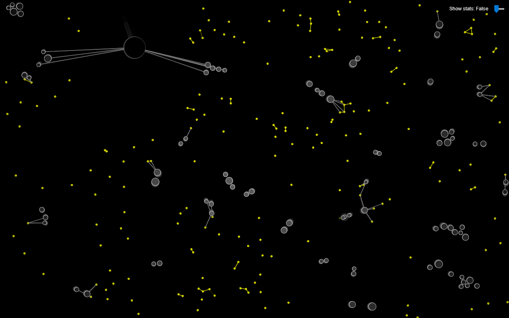

Autonomous Agents

Project Description
Passive agents' movement is calculated based on weighting between: desire to locate and eat food, avoid threats, and flocking patterns (alignment, cohesion, separation).
Aggressive agents' movement is similar to the passive agents, but instead searches for passive cells as food, and doesn't avoid threats.
Food cells are spawned at a fixed rate, and move using a random walk.
All agents will age and gradually lose mass, proportionally to their current mass (the larger the mass, the more food it requires).
Hovering over an agent will show its type and properties about it.
Originally implemented in p5.js, later rewritten in c++ and openFrameworks using a more optimised object-oriented approach for improved performance.
Technical Info
- p5.js
- C++
- openFrameworks
Contact me at tombenyunes@gmail.com
See more at https://github.com/tombenyunes
See more at https://github.com/tombenyunes